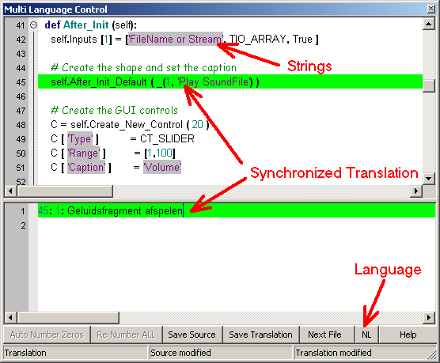

Launch Center  (October 2008)
(October 2008)
Application Designer / Domain Expert / Control Designer / Core Developer
Getting Started
With the Launch Center all major applications within the PyLab_Works frame can be started. At this moment not all parts are fully functional, but at least they will give you a fair idea of the functionality of PyLab_Works. The Launch Center may contain some core developers part, because it's also used by the core designers to do their development.
Main: this is the major page where all programs can be launched. At this moment the Library manager contains a better IDE than the IDE itself, that's because I use the Launch Center myself as a coding and testing tool.
Demos: This page contains full working demos of PyLab_Works applications and it will gradual grow in time. All demo-projects can be run in application mode and in design mode, in the latter you can modify the design ( the original demo can always be recovered)
Test: Don't dare to look at that page, it's mainly meant for core developers, but it might be also useful to track down installation problems on different Operating Systems.
With the Launch Center all major applications within the PyLab_Works frame can be started
PyLab Works : The main application, this should work pretty well, still it's strongly recommended to start with the demos.
IDE : A simple editor / IDE to edit and test general Python programs. This is a very premature version, just meant for my own to run tests. The Library manager already contains a more mature version of the IDE.
Library Manager : Manage PyLab_Works libraries, download / upgrade from the web. Work in progress, but might give you a good idea of the future version. As already said, this library manager contains a more mature version of the IDE.
Translation Tool : A tool to edit and upload translations of PyLab_Works libraries.
Each of the above modules can be started with a number of CommandLine Flags (always lowercase), shown on the lower-left corner:
PyLab Works
PyLab_Works is an easy development environment, based on the domain knowledge of experts. So the user doesn't need any programming knowledge nor does the user need to be an expert on that particular domain.
IDE
This is a simple but yet quite functional Python-only IDE. Some of the features

Library Manager
With the Library Manager it's easy to compare / update / rollback your local files with the latest files on the web. The library manager scan your PyLab_works directories and the PyLab_Works Website, compares these two and gives you a nice overview of the differences. The you can decide on an individual file base which files should be updated to the latest version.
Below is image of the Bricks tab, which is a good example of all the other groups.

Translation Tool
With the Translation tool it's easy to make a translation of the strings in one or more files, and also to test the original files for strings and see if these strings are made multi-lingual.

Demos
This page contains a connection to all demos, although quit empty fro the moment, this should grow to a full showcase of many demos in all kinds of applications. You can run each demo in both application mode or design mode, and in the latter you can make changes and see the effects. You can always restore the orginal demo.
Tests
The tests page lists all the files in the project. This is mainly meant for the core developers, but it can be handy to test certain problems in other Operating Systems.